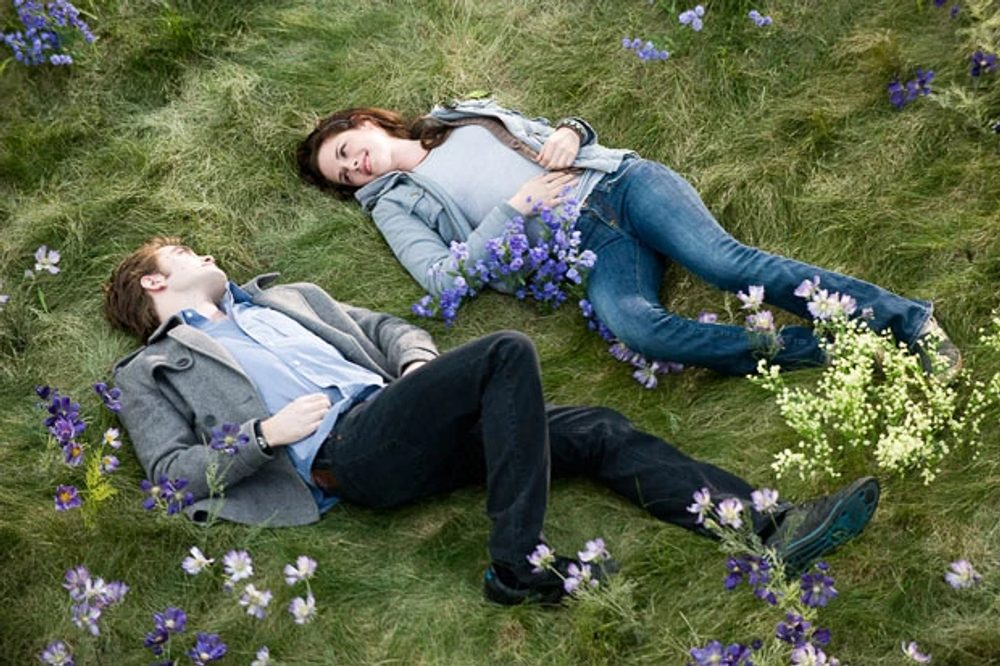

Sinopsis
Bella Swan, una adolescente de diecisiete años, se muda de Phoenix a Forks, Washington, un pequeño pueblo conocido por su lluvia y sus bosques, para vivir con su padre. Allí conoce a Edward Cullen, un compañero de clase tan atractivo como misterioso. Pronto descubre que Edward y su familia son vampiros que se alimentan de sangre animal.
A pesar del peligro, ambos se enamoran. La llegada de una banda de vampiros nómadas pondrá a Bella en el centro de una cacería y obligará a los Cullen a demostrar hasta dónde están dispuestos a llegar para protegerla.

Un amor imposible
La relación entre Bella y Edward está marcada por la tensión entre el deseo y el peligro. Él teme perder el control; ella se niega a vivir sin él. Esa dualidad convierte cada encuentro en una mezcla de ternura y amenaza, y explica por qué la historia se volvió un fenómeno cultural.
«Y así, el león se enamoró de la oveja.» — Edward Cullen
Detrás de cámaras
La película adapta la novela homónima de Stephenie Meyer, publicada en 2005. Fue dirigida por Catherine Hardwicke y se estrenó el 21 de noviembre de 2008. La química entre Kristen Stewart y Robert Pattinson, la fotografía azulada de Forks y la banda sonora se convirtieron en señas de identidad de la saga.
Stephenie Meyer
Autora de la novela original
Catherine Hardwicke
Directora de la película